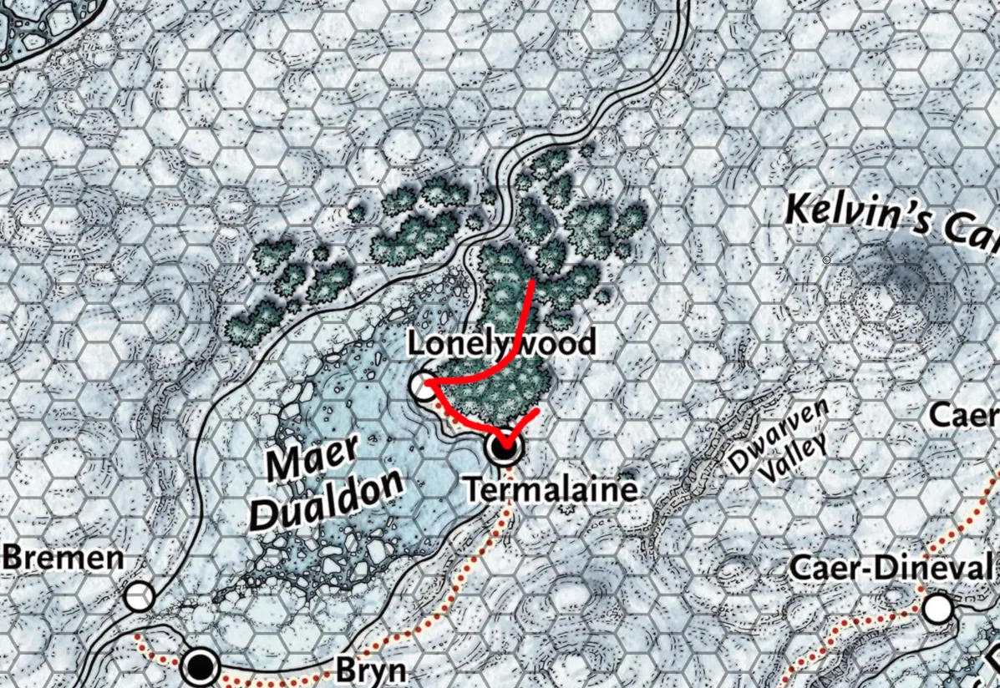

Session 2

Dag 4¶
Beginnend in Termalaine ❄️ (we hebben een longrest gehad dus zijn weer helemaal 100%)
We krijgen onze beloning van 50 Gold 19 van de vorige quest (Beesten in mines)
De Karavaan is er nog.
Elena Footshadow (Lies) en Drawr Poof (Lars) gaan naar The Blue Clam, Skog Traustur (Jesse) en Althea Sardothien (Sara) houden de Karavaan in de gaten
Na een typische dag vissen komen mensen bij The Blue Clam iets drinken. Vernon Brake Neutral good Ork staat bij de bar, en we hebben geluk want hij kent een aantal jagers die in de Lonelywood ❄️ actief zijn, die komen dan naar Termalaine ❄️.
In Caer-Denival ❄️ hebben ze al een tijdje de dorpsspreker niet gezien. Kranok is ziek geworden. Synistere figuren komen steeds in en uit (de side quest die we eerder ook gehoord hebben toevallig)
We gaan nu naar The Eastside, daar komen we weer Martha Peschkliek tegen.
Om de godin gerust te stellen hebben alle dorpen ene groot ritueel, de grotere offeren mensen. Kleinere dorpen (zoals Termalaine ❄️) doen eens per maand vis in the Lonelywood ❄️ ophangen als offer.
we krijgen nieuwe rumor: in Lonelywood ❄️ is een gevaarlijke White moose gespot, valt jagers aan. Andere jagers hebben geen kans om m uit te schakelen.
Town speaker is blij met onze actie bij de mijn: kobolden luisteren goed.
Over naar Skog Traustur (Jesse) en Althea Sardothien (Sara) bij de Karavaan: Torga is een man, en allen blijven dicht in de buurt van de Karavaan. 4 beveiligers, waaronder Cevic Cautrum. Er zijn 2 sleeen: 1 met verkoop spullen, 1 met spullen van bewakers.
Althea Sardothien (Sara) probeert spullen te stelen, maar faalt.
Elena Footshadow (Lies) gaat Cevic Cautrum proberen te stalken, wagen is weg, richting Lonelywood ❄️ gegaan.
NACHT NACHT NACHT NACHT NACHT NACHT
Dag 5¶
We zijn van plan naar Lonelywood ❄️ te gaan, maar sneeuwstorm.
Partenex (dragonborn) kan ons helpen er naartoe te gaan door de storm heen.
Lonelywood ❄️ is een best wel groot bos
er staan grote rekken → is voor de offers, hangen ze vissen in
is binnenkort, dus dan is het buiten levensgevaarlijk (jeti’s en beren)
Lonelywood ❄️ is een klein dorp, ‘het uiteinde van de wereld’. houthakkers hakken hout en verkopen het in de dorpjes in het zuiden.
The Happy Scrimshander → winkeltje
The Lucky Liar → Taverne
Ramshackle → gesloten inn
bij die laatste heeft de eigenaar ‘The Groots??’ zichzelf opgehangen. inwoners geloven dat verhaal niet en is om een moort te verbergen. die plek is nu een houtopslag.
The Lucky Liar is om ‘s avonds verhalen te vertellen, wel overdrijft/liegt iedereen erover, vandaar ook de naam The Lucky Liar.
Danee Xotal (gitzwart haar) is de barman, zegt dat we hier niet kunnen overnachten en verwijst ons door naar de dorpsspreker
Dorpsspreker Nincy Huddle (Halfling) kunnen we wel bij overnachten, super lief en bakt zelfs koekjes in de vorm van halflings voor ons. Vertelt ons dat Partenex een goeie gozer is omdat hij het dorp helpt met hout transportatie. We nemen hem mee om te navigeren door het bos. (kost wel 4 gold per dag, we besluiten m 2 extra dagen te betalen want morgen kunnen we niets ivm de offers)
Na veel rondjes komen we 3 Chingra's tegen, helaas geen White moose (wel normale elanden). Na terugkomst verteld Nincy Huddle dat Chingra’s best wel zeldzaam zijn, en zijn ze best wel geintereseerd in moderne technieken.
We besluiten nog even de Karavaan te checken, het is inmiddels avond. Bij de Karavaan zitten atm maar 2 bewakers. Althea Sardothien (Sara) sneakt naar de Karavaan met de spullen van de bewakers, en ziet in een zak een lijk van een half elf zitten. Herkennen we niet maar is wel vermoord door hetzelfde ijswapen. In de verte staan 2 Chingra’s naar ons te koekeloeren.
Op de weg terug naar het huis van Nincy Huddle loopt Danika Graysteel naar ons toe, bevriest jesse even, maar blijkt een goed persoon te zijn: is een wetenschapper. Denkt dat de Chingra’s kunnen helpen om het klimaat te verbeteren en vraagt ons om er een aan dr aan te leveren. We krijgen een lantaarn om deze Chingra’s makkelijk te kunnen vinden.
Althea Sardothien (Sara), Drawr Poof (Lars) en Skog Traustur (Jesse) gaan terug naar Nincy Huddle om daar te rusten. Elena Footshadow (Lies) gaat opzoek naar Cevic Cautrum (terwijl het nacht is) en vind m dronken op straat zitten. Bindt m vast, verstopt m in de houtopslag Ramshackle en haalt de rest erbij. We ondervragen m maar wilt niets loslaten. Verteld wel dat hij is opgegroeid in een dorp/gebied genaamd ‘Midwinter’. Heeft de auriel-blessing waardoor ie het nooit koud krijgt, krijgt zelfs extra health als de temperatuur onder 0 graden is. (de godin die het gebied ijzig heeft gemaakt heet ook Auriel!!)
Na een gevecht hebben we Cevic Cautrum vermoord ☹️ We begraven m, maar komen een Banshee TEGEN AAAA, we rennen weg, maar na een schreeuw val ik in 1 klap dood. Jesse redt m en we blijven door rennen terug naar het huis van Nincy Huddle.
NACHT NACHT NACHT NACHT NACHT NACHT
Dag 6¶
LONG REST
NACHT NACHT NACHT NACHT NACHT NACHT
Dag 7¶
Na een long rest gaan we weer het bos in. We komen weer de Chingra’s tegen, ze lijken heel vriendelijk te zijn en zorgen zelfs voor een positieve charm. Skog Traustur (Jesse) is super slim en neemt ze op een vriendelijke manier mee. We geven er eentje aan de wetenschapper Danika Graysteel, die is zo blij dat het op een vriendelijke manier ging dat we een extra 25 gold krijgen (totaal 50 Gold 19 dus) inclusief de Chingra lantaarn.
Nu gaan we terug het bos om de White moose te vinden: we komen een Elven Tombe tegen. We zien verschillende dingen: een graf, marmeren standbeelden van elven waarbij de gezichten niet herkenbaar meer zijn, een zonnewijzer en. Om het graf staan paaltjes met icoontjes, van noord naar zuid: tak, denneappel, vlam, veer, mensenhand. Gooien deze objecten in de vuurschaal en horen ineens gebonk uit het graf komen. Jesse maakt het graf open en daar komt Zanar uit: een elven mummie. Is super blij dat we ‘m ‘gered’ hebben, maar spreekt alleen elvish dus kan alleen met Elena Footshadow (Lies) praten. Hij kan zich niets herinneren maar wilt ons wel helpen.
De White moose zit in de grot achter de tombe, we wachten tot ie eruit komt: dan valt ie ineens aan!! dus we gaan tegen m vechten en dan gaat ie dood omdat Zanar SUPER sterk is. Blijkt dat er een curse/vloek over de White moose heen zat, we weten verder niet echt wat dat betekend.
END OF SESSION